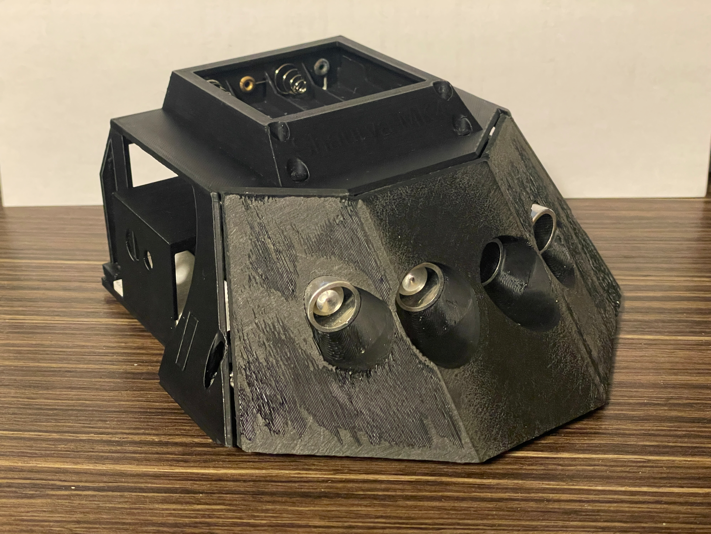
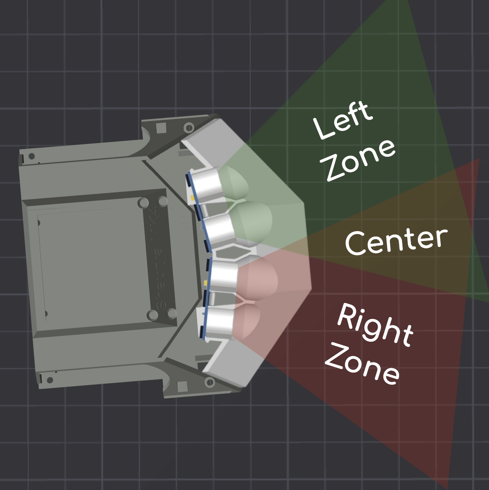
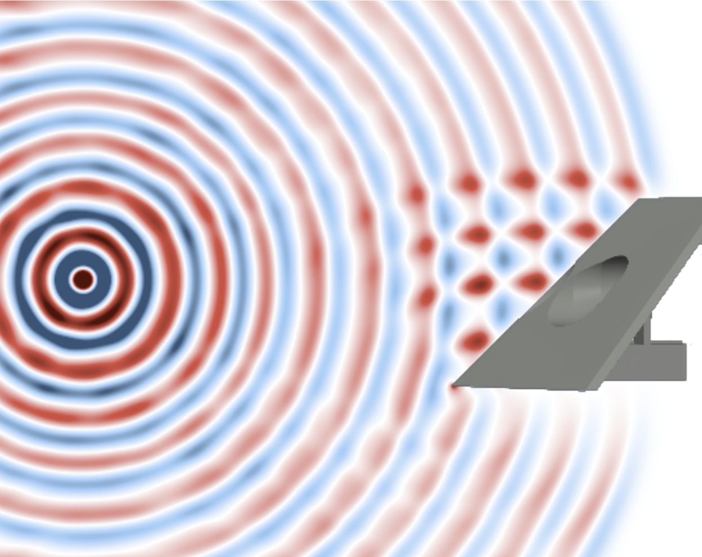
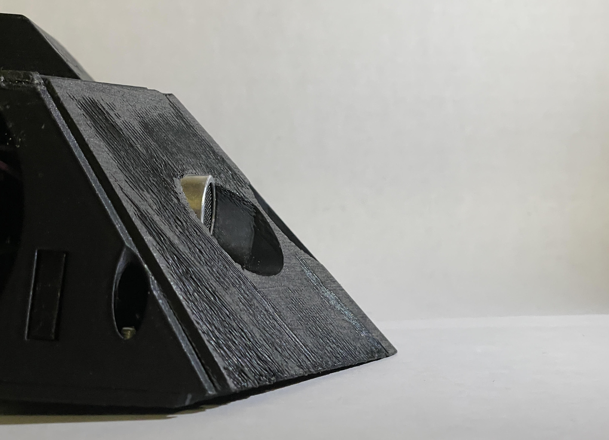
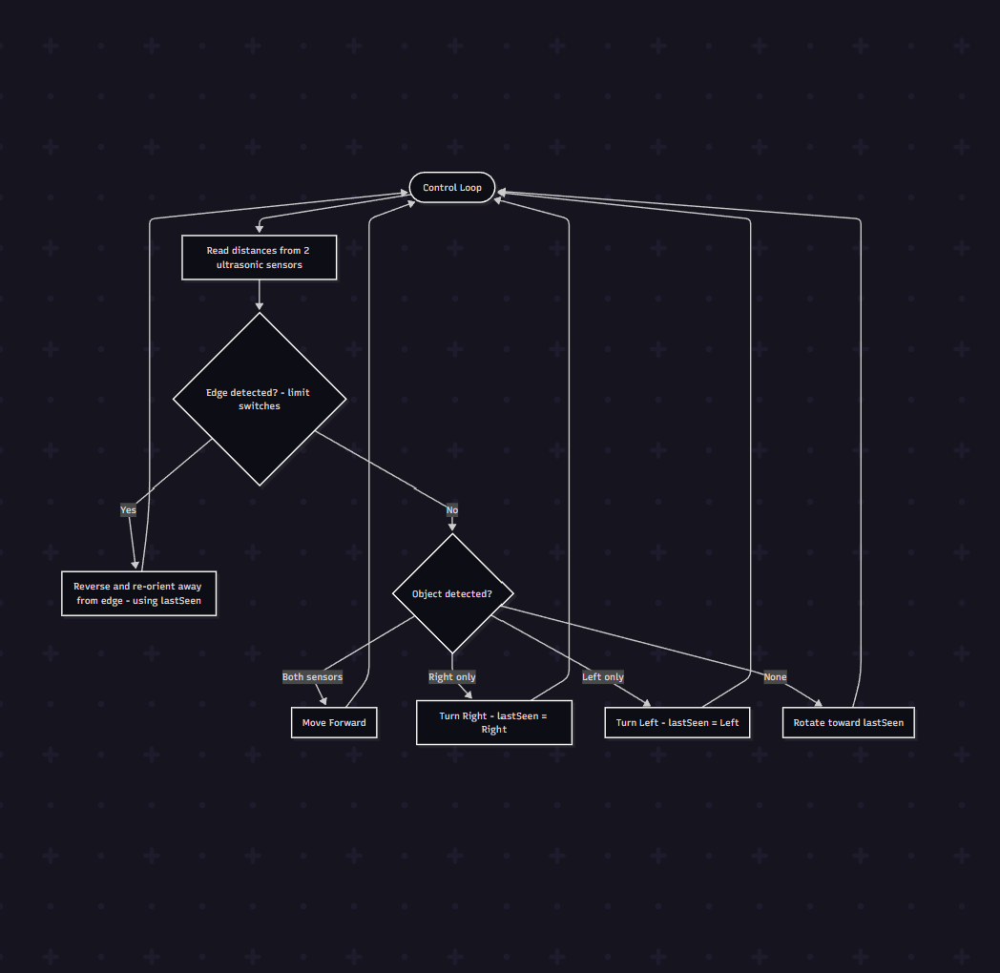
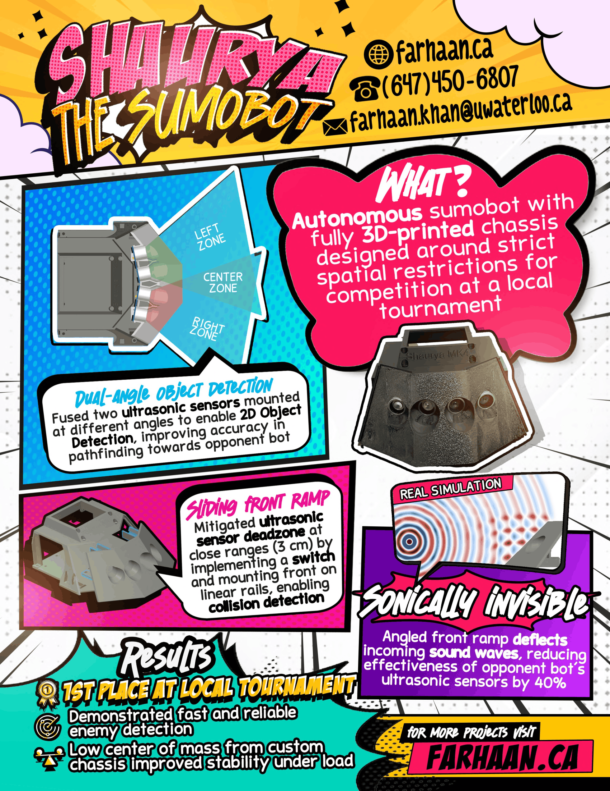

Shaurya the Sumobot
Overview
Designing a self-driving sumobot is ultimately a problem of making the most of very limited data. The arena is small, the crowded space provides noisy data, and every twitch in the seeking algorithm results in lost ground.
With only two ultrasonic sensors, a handful of limit switches, and a compact 3D-printed chassis, I set out to build a robot that could ruthlessly optimize every variable. The severely limited scope of the competition left no room for shortcuts or tricks, the only way I would win this is by nailing my fundamentals.

Dual‑Angle Object Detection
Ultrasonics measure distance but not direction; once the opponent moves even slightly off‑axis, the echoes degrade, lag, or vanish. This could be the difference between real-time homing and spinning in circles trying to find the enemy bot.
To fix this, Shaurya uses two sensors angled apart, creating overlapping fields of detection that together form a coarse but effective 2D picture. When both sensors pick up a target, the robot drives forward with confidence; if only one sees something, it pivots sharply toward that direction. This fusion turns two low‑quality signals into one reliable directional cue. The bot behaves decisively because it not only knows how far the opponent is, but also where they are.

Sneak 100
Ultrasonic data can be noisy and unreliable, so why not use it to my advantage? Opponents’ sensors emit sound waves in only one direction, and flat surfaces reflect that noise in exactly one direction. Shaurya’s front ramp was designed to exploit this by flying straight over the enemy’s head, literally. By deflecting the wave off an angled plane, incoming ultrasonic pulses are deflected to the ceiling instead of returning to the opponent. This dramatically weakens the echo signature the enemy receives, making Shaurya significantly harder to lock onto. Testing measured roughly a 30% reduction in detection reliability based on response distances.

The geometry serves a dual purpose however. While it passively degrades the opponent’s sensing accuracy, it still behaves like a proper sumobot wedge by lifting and redirecting forces during collisions. This means Shaurya can still keep the sumo in sumobot without sacrificing its ability to stay hidden. The result is a robot that not only sees its opponent more reliably, but is itself substantially harder to detect, a strategic edge created through simple physics rather than additional electronics.

Aggressive Action > Cautious Inaction
At the heart of the robot is a control loop designed to act first and refine later. Instead of hoping for perfect sensor agreement, Shaurya commits to movement based on the strongest available cue: forward pressure when the opponent appears centered, lateral pressure when one sensor dominates, and rapid reacquisition turns when visibility drops. Timeouts and non‑blocking sensor reads prevent lockups and ensure decisions are made at a high frequency. The philosophy is simple: continuous action beats cautious waiting. By tying every motion to a directional hypothesis, rather than random searching or slow verification steps, the robot becomes difficult to evade and quick to exploit openings. In a contest measured in seconds, this constant forward intent becomes a competitive advantage in itself.

Quick Recap
